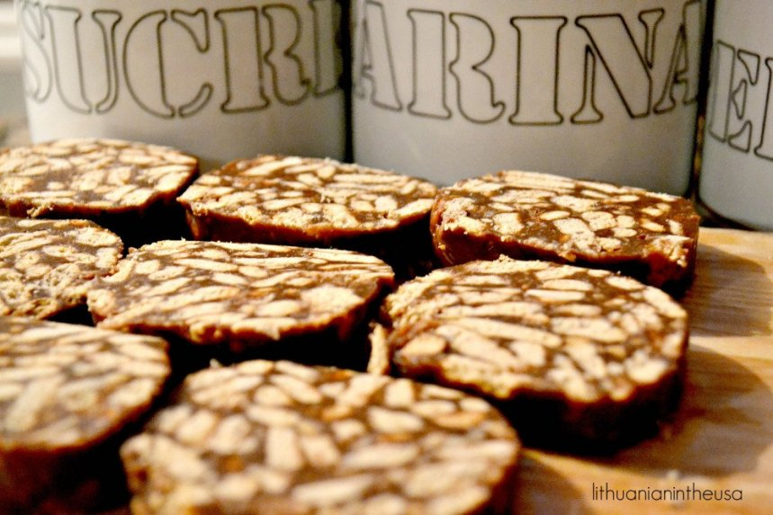

Pamenu, vaikystėje tinginį gamindavo be jokio kondensuoto pieno, bet virdavo su pienu, cukrumi, sviestu – tinginys išeidavo minkštesnis, bet toks pats nerealiai gardus. Gaminant tinginį su kondensuotu saldintu pienu yra truputį paprasčiau ir greičiau negu tik su pienu.
 Taigi, kaip pasigaminti šį nuostabų kūrinį? Jums reikės:
Sausainius sutrupiname į dubenį (vienus sutrupiname smulkiau, kitus stambiau). Sviestą išlydome puode storu dugnu, tuomet suberiame cukrų, kaitiname ant silpnos ugnies ir maišome, kol cukrus ištirps ir išeis vientisa masė. Į sviesto masę supilame kakavas, kondensuotą pieną, viską išmaišome ir kaitiname vis pamaišydami, kol išeis visiškai vientisa masė be jokių gumulėlių. Tuomet nukeliame nuo ugnies ir paliekame truputį pravėsti. Į kakavinę masę suberiame sutrupintus sausainius, gerai išmaišome ir paliekame tinginį visiškai atvėsti. Patiesiame maistinę plėvelę ant stalo ir ant jos pailgai išklojame atvėsusią sausainių masę. Suformuojame ritinį ir susukame į maistinę plėvelę, gerai užspaudžiame galus, dedame į šaldytuvą stingti bent 4 valandoms (geriausia palikti pernakt). Skanumėlis!
Grįžti